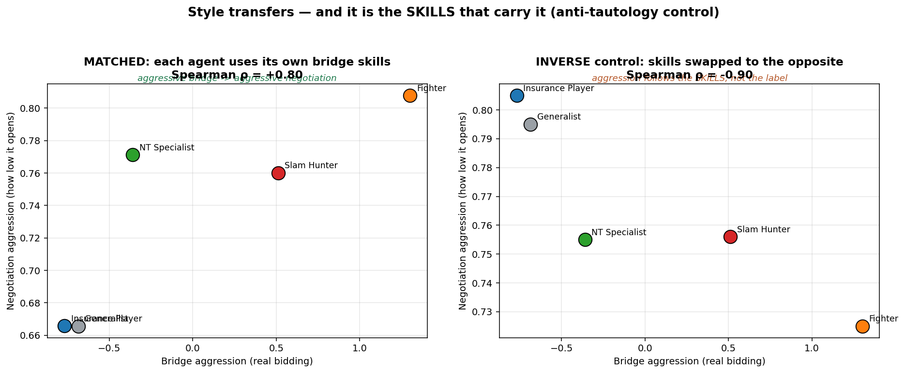
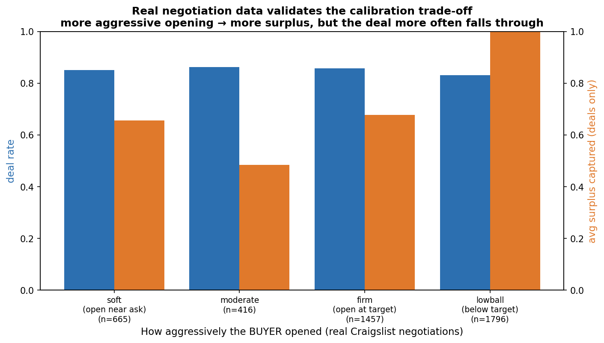

דאבל = מהלך תחרותי: "אני בטוח שתיכשל — מכפילים את הקנס".
בתחרויות כל יד משוחקת בשני שולחנות עם אותם קלפים — אז אפשר להשוות ביצועים נקי.
חלק א — הנתונים והפרופילים
מאיפה הנתונים, וכמה יש?
149,208 רשומות-לוח מאליפויות אירופה בברידג' (2016–2025), שגרדנו מהאתר הרשמי. אחרי סינון איכות נשארו 563 שחקנים עם מספיק ידיים (לפחות 50) כדי למדוד עליהם התנהגות באופן אמין.
איך הגדרתם את הפרופילים?
חישבנו לכל שחקן 8 מספרים שמתארים התנהגות (כמה סלאמים, כמה דאבלים, כמה עוצר נמוך...). ניסינו קודם אשכולות (K-Means) — נכשל: השחקנים הם רצף אחד, לא קבוצות נפרדות. אז עברנו לשיטה אחרת: לקחנו את 10% הקיצוניים בכל ציר התנהגות, ואימתנו כל שיוך במבחן בינומי (p<0.05). יצאו 4 פרופילים קיצוניים + "כללי".
דוגמה: "צייד סלאמים" = שחקן שמכריז סלאם בתדירות שנמצאת ב-10% העליונים, והמבחן הסטטיסטי מאשר שזה לא מזל של מדגם קטן.
כל פרופיל = הזנב הקיצוני (10% עליונים) של ציר התנהגות אחד. אפור = כלל האוכלוסייה; צבע = הפרופיל.
למה K-Means נכשל? מה זה אומר עליכם?
K-Means מחפש "איים" נפרדים, והנתונים שלנו הם "רצף" — כמו גובה של אנשים (אין קבוצה נפרדת של "גבוהים" עם פער באמצע). ציון ההפרדה (silhouette) יצא 0.24 כשנדרש 0.5+. זה לא כישלון של המחקר — זה ממצא: שחקני עילית לא מתחלקים לסוגים נפרדים, ולכן השיטה הנכונה היא לזהות קצוות, לא לחתוך קבוצות.
מה ההוכחה שהפרופילים אמיתיים ולא רעש?
שלוש שכבות: (1) מבחן בינומי לכל שחקן (p<0.05); (2) גודל אפקט עצום — Cohen's d בין 2.1 ל-4.6, כשכבר 0.8 נחשב "גדול"; (3) הפרופילים נשמרו יציבים על פני 5 תצורות עיבוד שונות.
מה זה Cohen's d: מדד כמה שתי קבוצות נפרדות זו מזו. d=2.1 אומר שכמעט כל "צייד סלאמים" מכריז יותר סלאמים מכמעט כל שחקן רגיל — חפיפה זעירה.
חלק ב — איך מדדנו "כמה טוב" (קוף, double-dummy, IMP)
מה זה "הקוף" ולמה הוא בכלל שם?
סוכן שמכריז אקראי לחלוטין (אבל חוקית) — בלי לראות קלפים, בלי אסטרטגיה. הוא משמש מבחן שפיות למדד: אם מדד-מיומנות נותן לקוף ציון טוב — המדד שבור. ואכן, המדד הראשון שלנו נכשל במבחן: הקוף ניצח בו את כל המומחים. זה אילץ אותנו לתקן.
מה זה double-dummy?
מנוע חישוב שמקבל את כל 52 הקלפים ומחשב — בלי לשחק — מה התוצאה של חוזה אם כולם משחקים מושלם. כמו מחשב שחמט שאומר "לבן מנצח ב-5 מהלכים" בלי שמישהו יזיז כלי. ככה אפשר לנקד כל הכרזה: חוזה שמצליח = ציון גבוה; הבטחת-יתר שנופלת = ציון 0.
שמאל: במדד הגס הקוף (אדום, 0.54) מנצח את כולם — מדד שבור. ימין: בניקוד double-dummy הקוף אחרון (0.10) — מיומנות מנצחת.
מה זה IMP ולמה לא למדוד בנקודות רגילות?
IMP הוא הסולם הרשמי בברידג' תחרותי: "בכמה ניצחת בלוח מול השולחן השני", בסולם דחוס. הסיבה: בנקודות גולמיות לוח סלאם אחד (~1,500 נק') שווה כמו 13 לוחות רגילים — שחקן יכול להיראות "מצוין" בגלל 2–3 ידיים בודדות. ב-IMP סלאם = ~13 ולוח רגיל = ~2, אז אף יד בודדת לא משתלטת על הממוצע.
איך נראה "סרגל המיומנות" המלא?
חישבנו על 2,000 לוחות אמיתיים שלושה עוגנים על אותו ציר: הקוף (תחתית), השחקנים האמיתיים, והמשחק המושלם (תקרה).
הקוף: -7 IMP ללוח (אסון). שחקני העילית: סביב 0 (כולם קרובים לממוצע השדה). משחק מושלם: +1.1. בזום: התוקפנים (Slam Hunter, Fighter) מובילים בין הפרופילים.
חלק ג — התוצאה המרכזית: הסגנון עובר
מה הייתה שאלת המחקר, ומה התשובה?
השאלה (כפי שנוסחה מההתחלה): האם יש התאמה התנהגותית של לפחות 70% בין הפרופילים בברידג' ובמשא ומתן. התשובה: כן — ρ=+0.80. פרופיל תוקפני בברידג' (הרבה סלאמים/דאבלים) פותח במו"מ בהצעות נמוכות ולוחץ; פרופיל שמרן מציע מתון וסוגר מהר.
מה זה Spearman ρ?
מספר בין -1 ל-+1 שבודק האם סדר הדירוג נשמר בין שני תחומים. אם מי שהכי תוקפני בברידג' הוא גם הכי תוקפני במו"מ, והשני נשאר שני וכו' — ρ מתקרב ל-+1. אצלנו ρ=+0.80 אומר: הדירוג כמעט זהה (היפוך קטן אחד מתוך 5).
דוגמה: דירוג גובה של 5 חברים מול דירוג מספר הנעליים שלהם — אם הסדר כמעט זהה, ρ גבוה.
ציר X: תוקפנות בברידג' (מהנתונים האמיתיים). ציר Y: תוקפנות במו"מ (כמה נמוך הסוכן פותח). Fighter תוקפני בשניהם; Insurance שמרן בשניהם. ρ=+0.80.
איך מדדתם "תוקפנות" בכל תחום?
בברידג': ציון משולב של שלוש התנהגויות מהנתונים האמיתיים — שיעור סלאמים, פתיחות גבוהות, ודאבלים (כל אחת מתוקננת, ואז ממוצע). במו"מ: "עומק הדרישה" — כמה נמוך הסוכן פותח ביחס לטווח המחירים. 0 = מציע את המחיר המבוקש; 1 = דורש את המינימום של המוכר.
למה לא פשוט "מי שמנצח בברידג' מנצח במו"מ"?
כי בדקנו — וזה יצא חלש ולא יציב (ρ≈+0.2, ואפילו התהפך כששינינו את אופי המוכר). הסיבה עקרונית: ניצחון תלוי ביריב ובחוקי הניקוד, לא רק בשחקן. אותו סגנון תוקפני יכול לנצח מול מוכר ותרן ולהפסיד מול מוכר קשוח. לעומת זאת ההתנהגות של השחקן יציבה — ולכן היא המדד הנכון לשאלת ההעברה.
חלק ד — השאלות הקשות
שיניתם את שאלת המחקר אחרי שראיתם תוצאות?
לא — חזרנו אליה. שאלת המחקר המקורית, כפי שנכתבה במסמכי הפרויקט מהיום הראשון, היא "התאמה התנהגותית" (behavioral alignment). בדרך בדקנו גם את גרסת ה"ניצחון" — שהיא מסקרנת אך רועשת — ותיעדנו את זה בשקיפות מלאה. הזיקוק מ"ניצחון" ל"סגנון" הוא חידוד מדידה של אותה שאלה, לא החלפת שאלה, וכל שלבי הביניים שמורים ב-Git ובמסמכים.
אולי הסוכן תוקפני רק כי כתבתם לו "אתה תוקפני"? (מעגליות)
זו הייתה הדאגה המרכזית, ולכן בנינו שתי הגנות. הגנה 1: לסוכן מעולם לא נכתב "תהיה תוקפני" — הוזרקו לו רק כישורי ברידג' שחולצו מהמשחקים האמיתיים (למשל "מכפיל יריבים בתדירות גבוהה"). הגנה 2 (ההוכחה): בקרת "פרומפט הפוך" — נתנו לכל פרופיל את הכישורים של הפרופיל ההפוך ומדדנו שוב. אם ההתנהגות הייתה נדבקת לתווית, כלום לא היה משתנה. בפועל הקשר התהפך לגמרי: מ-+0.80 ל--0.90.

שמאל: כישורים תואמים → ρ=+0.80. ימין: כישורים מוחלפים → ρ=-0.90. ההתנהגות עוקבת אחרי הכישורים, לא אחרי השם.
ניסיתם הרבה מדדים עד שיצא מספר יפה — זה לא p-hacking?
ההפך: כל גרסאות הביניים מתועדות (כולל אלו שיצאו רע), והמדד הסופי לא מכיל אף פרמטר שכוונן ידנית — תוקפנות-ברידג' באה ישירות מהנתונים האמיתיים, ותוקפנות-מו"מ נמדדת מהלוגים כפי שהם. בנוסף יש בקרה שלילית (ה--0.90) שמראה שהתוצאה נשברת בדיוק כשהיא אמורה להישבר — מה שמספר מכוונן לא היה עושה.
n=5 — אפשר בכלל להסיק משהו מחמש נקודות?
בזהירות. עם n=5, ρ=+0.80 נותן p≈0.10 — לא מובהק, ואנחנו אומרים זאת במפורש: זו אינדיקציה חזקה, לא הוכחה. מה שמחזק אותה: הבקרה ההפוכה כן מובהקת (p=0.037), הכיוון עקבי בכל המדידות, והיסוד (הפרופילים עצמם) מובהק מאוד. הדרך להוכחה מלאה: יותר פרופילים (חלוקה עדינה יותר של 563 השחקנים) — מתוכנן לשלב הבא.
המשא ומתן כולו מדומה — אז מה זה שווה?
נכון שאין נתוני מו"מ אמיתיים של שחקני הברידג' (אף אחד לא הקליט אותם מנהלים מו"מ). אבל הסימולציה מעוגנת במציאות: ניתחנו 5,247 משא-ומתנים אמיתיים בין אנשים (מאתר מכירות יד-שנייה) ולמדנו מהם איך מוכרים אמיתיים מתנהגים — ואז כיווננו את המוכר המדומה לפי זה. הממצא מהנתונים האמיתיים: פתיחה תוקפנית תופסת יותר רווח, והעסקה כמעט אף פעם לא מתפוצצת.

5,247 מו"מ אמיתיים: ככל שהקונה פותח תוקפני יותר (ימינה) — הרווח עולה (כתום), ואחוז העסקאות שנסגרות (כחול) כמעט לא יורד.
אולי "צייד הסלאמים" הוא פשוט שחקן חזק יותר, לא סגנון?
חשד מוצדק שאנחנו מציינים כמגבלה: הפרופיל מוגדר לפי הכרזת סלאמים, וייתכן ששחקנים שמכריזים יותר סלאמים הם גם חזקים יותר באופן כללי. בדיקת ההמשך: לנטרל סטטיסטית את הרמה הכללית של השחקן ולבדוק אם הסגנון עדיין מנבא.
למה בכלל ברידג'? למה לא לחקור משא ומתן ישירות?
כי נתוני מו"מ עסקי אמיתיים הם סודיים, לא מתועדים, ובלתי-ניתנים להשוואה. ברידג' נותן מעבדה מושלמת לאותן החלטות בדיוק — סיכון, הימור, לחץ, הסתרת מידע — עם 149 אלף החלטות מתועדות, חוקים אחידים, ותוצאה מדידה לכל החלטה. הרעיון: ללמוד את "טביעת האצבע" ההחלטתית במעבדה, ולבדוק אם היא מנבאת התנהגות בעולם העסקי.
חלק ה — שאלות פתוחות (אין עדיין תשובה מלאה — לדיון)
1. מובהקות
ρ=+0.80 עם n=5 אינו מובהק (p≈0.10). הפתרון המתוכנן הוא להגדיל את מספר הפרופילים (חלוקה עדינה יותר), אבל זה טרם בוצע. שאלה לדיון: כמה פרופילים נחוצים, ואיך לחלק בלי לאבד את המשמעות?
2. תוקפנות = ממד אחד בלבד
מדדנו במו"מ רק "כמה נמוך פותחים". יש ממדים נוספים: קצב ויתור, נכונות לפוצץ עסקה, סבלנות. שאלה לדיון: האם להרחיב למדד רב-ממדי, ואיך לאמת אותו?
3. תלות במודל שפה אחד
כל הסוכנים רצים על מודל אחד (Gemini). ייתכן שחלק מהתוצאה תלוי במאפייני המודל. תוכנית: להריץ אימות צולב על 2–3 מודלים שונים — טרם בוצע.
4. בלבול סגנון/עוצמה
האם הפרופילים התוקפניים הם "סגנון" או פשוט "שחקנים טובים יותר"? נדרש ניתוח שמנטרל את רמת השחקן הכללית.
5. הכללה מעבר למחירים
האימות מהעולם האמיתי (5,247 מו"מ) הוא על מוצרי יד-שנייה זולים. האם המסקנות מחזיקות במו"מ עסקי בסכומים גדולים (מיזוגים, שכר)? אין לנו נתונים כאלה.
6. מהסגנון של הזוג לסגנון של היחיד
בברידג' התוצאה היא של זוג, וחילקנו קרדיט שווה לשני השותפים. הפרדת תרומה אישית דורשת נתונים נוספים (מי הכריז מה — קיים חלקית) — כיוון להמשך.